起こった現象
Visual Studio Code に Flutterの拡張機能を使ってアプリ開発を行い、開発したアプリを Android エミュレータにインストールしようとしたらPCがフリーズしました…( ;∀;)
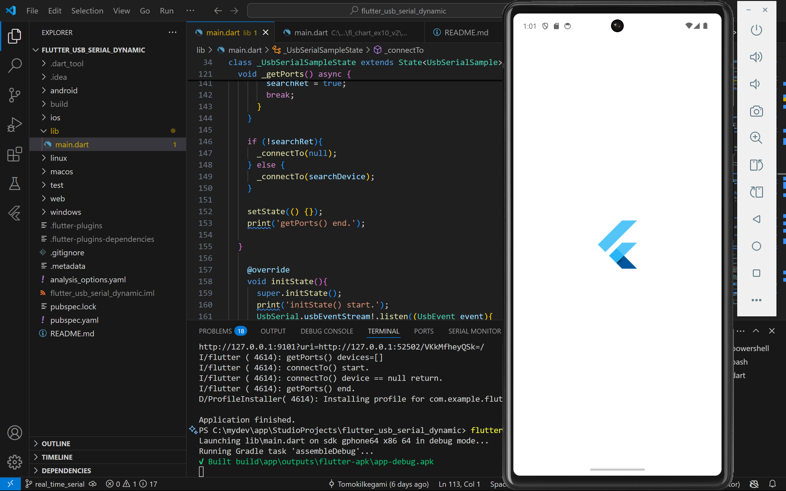
解決策
私の場合は Device Managerから使用しているエミュレータの設定を開き、Emulated Performance を「Software」に変更するとフリーズしてそのまま動かなくなることがなくなりました。
手順
Emulated Performanceを変更するには、まず Android Studio を起動して Device Manager を開きます。
Device Manager を開いたら使っているエミュレータの再生ボタン横にある、縦に3つ並んだ点をクリックして「Edit」を押します。
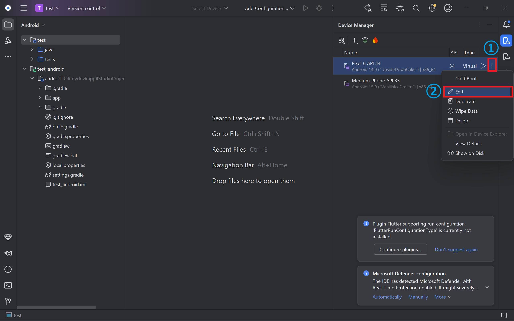
設定を下にスクロールして、Emulated Performance の Graphics を「Software」に変更し、Finishを押します。
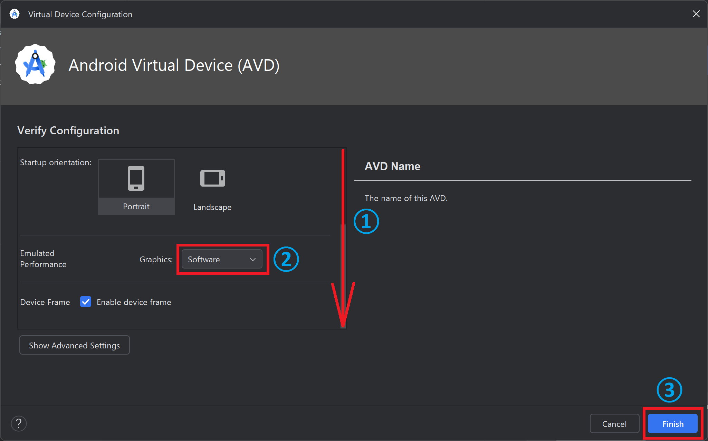
ここで、下の画像のように Graphics の設定がグレーアウトしており変更できない場合は、次の Android Virtual Device の作成手順 を参考にて別のエミュレータを入れてください。
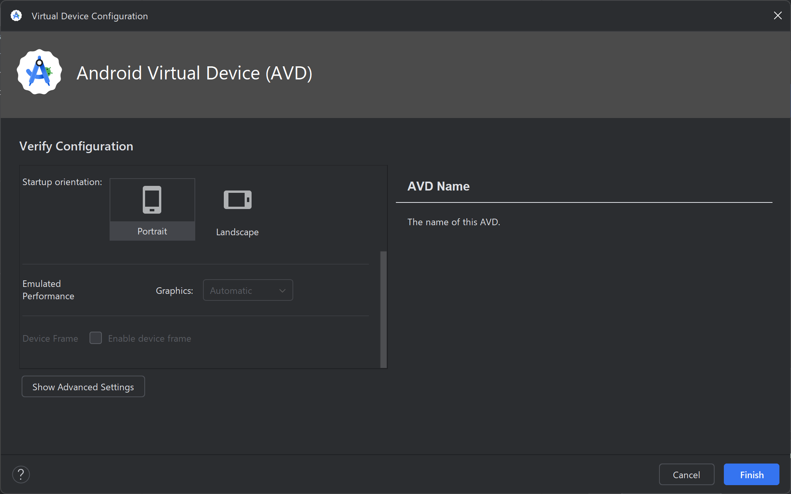
Android Virtual Device (AVD) の作成手順
AVDをインストールするときに Google Play のマークがついているものを選ぶと、グラフィックスの設定が変更できないみたいです（こちらの記事を見て知りました）。
新しい AVD をインストールするためには、まず Device Manager を開いて、「Create Virtual Device」クリックします。
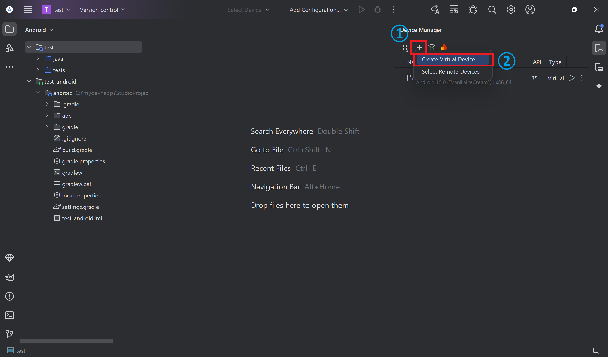
ここで、Google Play のマークがついていないデバイスを選びます（私は Google Pixel 6 を選びました）
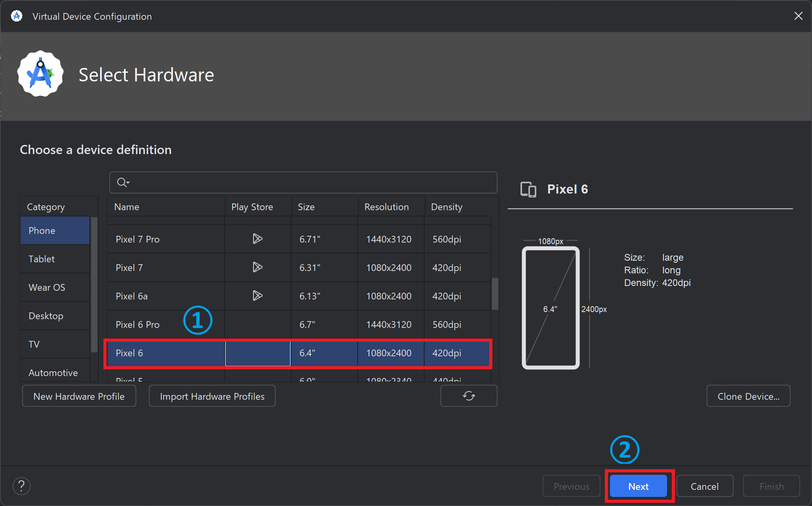
次に System Image をダウンロードします。Android 14にしたかったので、Release Nameは、UpsideDownCakeを選びます（Upside down cake おいしそう）
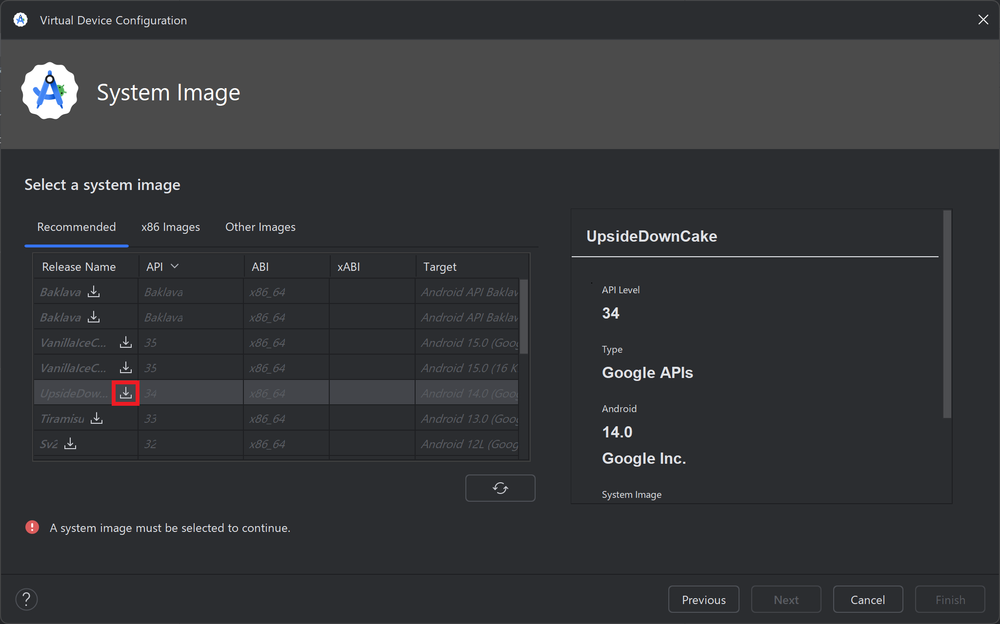

ダウンロードには少し時間がかかるので待ちます。ダウンロードが完了したら、Finishを押してください。
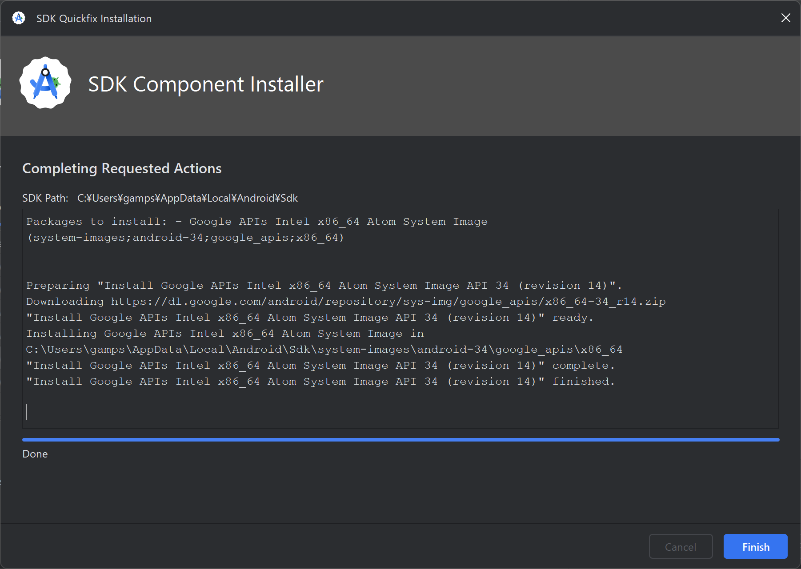
システムイメージのダウンロードができたら、「Next」を押します。
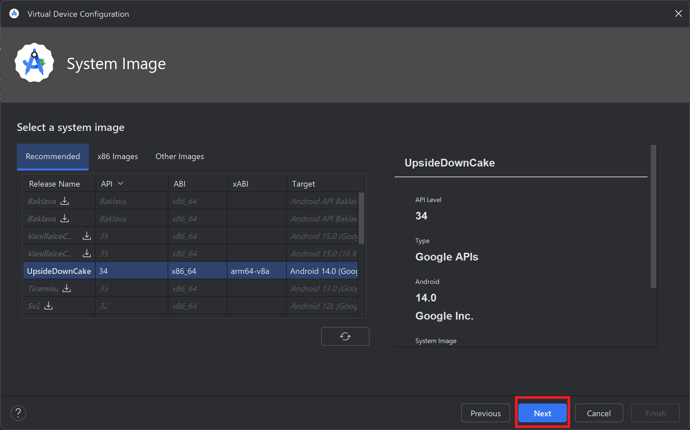
ここからはこの記事の初めのほうに説明した Edit Settings で開いた画面と同じになります。
設定画面の下のほうにスクロールして、Emulated Performance の Graphics を「Software」に変更し、Finishを押します。
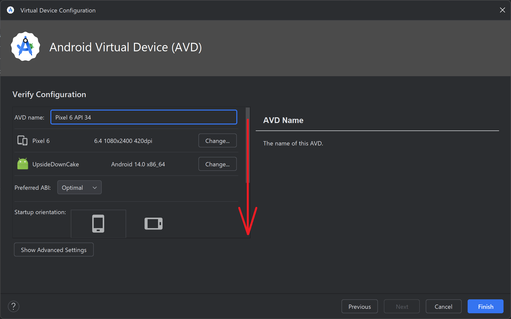
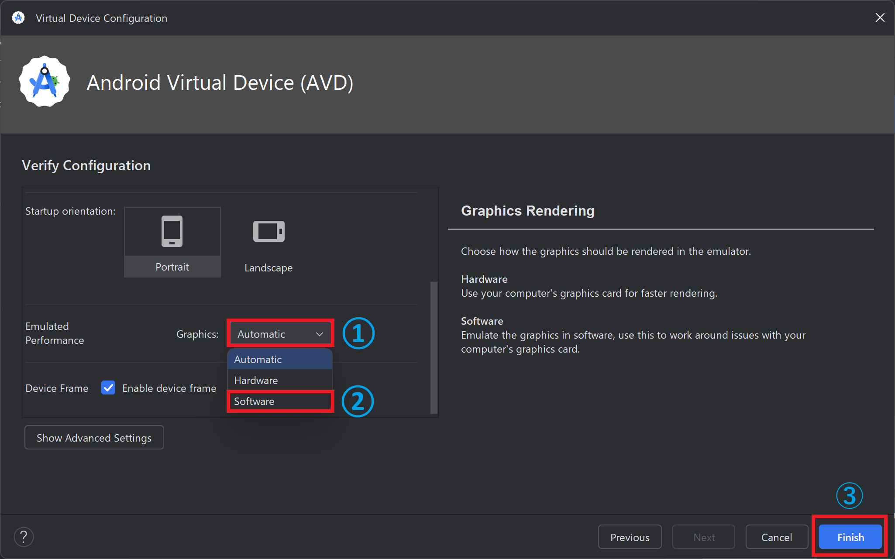
これでエミュレータを起動して、flutter run（Futterアプリを実行するコマンド） したらフリーズせずアプリをインストールできました！
参考文献
- Medium (@Ipek)「How to Fix AVD Freezes Linux Desktop Problem — android emulator alternatives」、(https://medium.com/@Kochipek/how-to-fix-adv-freezes-linux-desktop-problem-android-emulator-alternatives-907f3582278d)
- Qiita（@ciao_kaokawa (Kawai KAORU)）「GPUが要因でAndroid Virtual Deviceが起動しない」、(https://qiita.com/ciao_kaokawa/items/362bd5ca5b7c498ccd10)